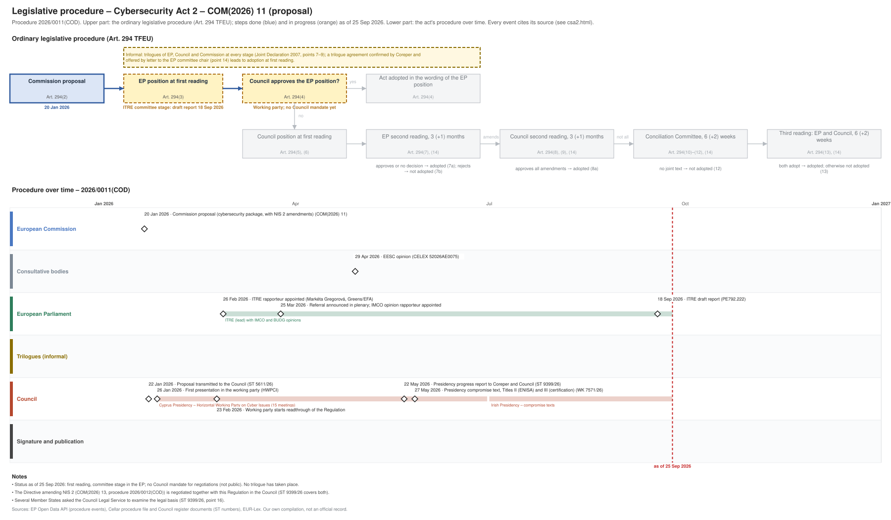

← All procedures · Regulation timeline
Procedure 2026/0011(COD), ongoing, as of 25 Sep 2026. Drawing: SVG · PNG · PDF (A3) · draw.io

| Date | Actor | Event | Document | Source |
|---|---|---|---|---|
| 2026-01-20 | European Commission | Commission proposal (cybersecurity package, with NIS 2 amendments) (Art. 294(2) TFEU) | COM(2026) 11 | Cellar (CELEX 52026PC0011) |
| 2026-01-22 | Council | Proposal transmitted to the Council | ST 5611/26 | Cellar procedure file; Council register (public document) |
| 2026-01-26 | Council | First presentation in the working party (HWPCI) | Council progress report ST 9399/26, point 7 | |
| 2026-02-23 | Council | Working party starts readthrough of the Regulation | Council progress report ST 9399/26, point 9 | |
| 2026-02-26 | European Parliament | ITRE rapporteur appointed (Markéta Gregorová, Greens/EFA) | EP Open Data API (participation RAPPORTEUR); ST 9399/26, point 5 | |
| 2026-03-25 | European Parliament | Referral announced in plenary; IMCO opinion rapporteur appointed | EP Open Data API (REFERRAL; RAPPORTEUR_OPINION IMCO) | |
| 2026-04-29 | Consultative bodies | EESC opinion | CELEX 52026AE0075 | Cellar (CELEX 52026AE0075); ST 9399/26, point 6 |
| 2026-05-22 | Council | Presidency progress report to Coreper and Council | ST 9399/26 | Council progress report ST 9399/26 |
| 2026-05-27 | Council | Presidency compromise text, Titles II (ENISA) and III (certification) | WK 7571/26 | Council register (public document) |
| 2026-09-18 | European Parliament | ITRE draft report | PE792.222 | EP Open Data API (ITRE-PR-792222) |
| Date | Document | Kind | Subject |
|---|---|---|---|
| 2026-01-22 | ST 5611/26 | council-transmission | Proposal for a REGULATION OF THE EUROPEAN PARLIAMENT AND OF THE COUNCIL on the European Union Agency for Cybersecurity (ENISA), the European cybersecurity … |
| 2026-01-22 | ST 5611/26 ADD 1 | council-transmission | ANNEXES to the Proposal for a Regulation of the European Parliament and of the Council on the European Union Agency for Cybersecurity (ENISA), the European … |
| 2026-01-22 | ST 5611/26 ADD 2 | council-transmission | COMMISSION STAFF WORKING DOCUMENT EXECUTIVE SUMMARY OF THE IMPACT ASSESSMENT REPORT Accompanying the documents Proposal for a Regulation of the European … |
| 2026-01-22 | ST 5611/26 ADD 3 | council-transmission | REGULATORY SCRUTINY BOARD OPINION - Cybersecurity Act Review |
| 2026-01-22 | ST 5611/26 ADD 4 | council-transmission | COMMISSION STAFF WORKING DOCUMENT IMPACT ASSESSMENT REPORT Accompanying the documents Proposal for a Regulation of the European Parliament and of the Council … |
| 2026-02-02 | WK 1616/26 | council-note | New Cybersecurity package - Presentation by the Commission |
| 2026-02-17 | ST 5611/26 ADD 3 REV 1 | council-transmission | REGULATORY SCRUTINY BOARD OPINION - Cybersecurity Act Review |
| 2026-04-29 | CELEX 52026AE0075 | opinion | Opinion of the European Economic and Social Committee a) Proposal for a Regulation of the European Parliament and of the Council on the European Union Agency … |
| 2026-05-18 | WK 6913/26 | council-note | EU cybersecurity certification of cyber posture - Presentation by the Commission |
| 2026-05-22 | ST 9399/26 | council-progress-report | Progress report |
| 2026-05-27 | WK 7571/26 | council-compromise | Presidency compromise text Titles II and III |
| 2026-07-02 | WK 5879/26 | council-note | Member States' consolidated comments on Articles 98-122 |
| 2026-09-18 | PE792.222 | ep-draft-report | DRAFT REPORT on the proposal for a regulation of the European Parliament and of the Council on the European Union Agency for Cybersecurity (ENISA), the … |
{kind=link}
{kind=link}